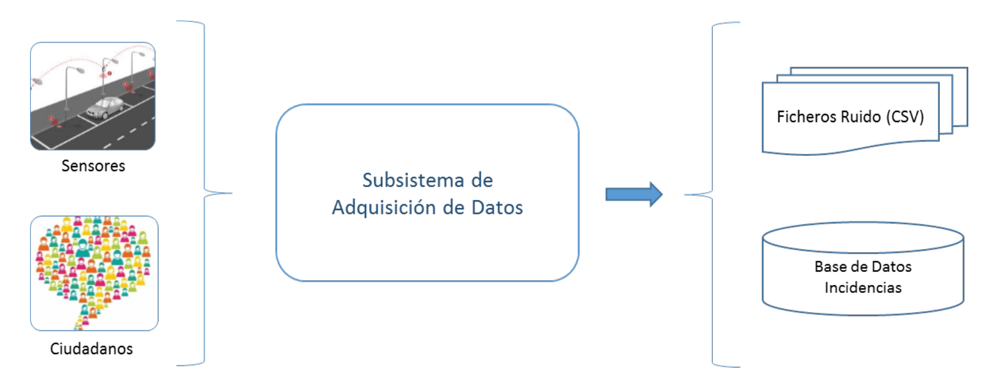
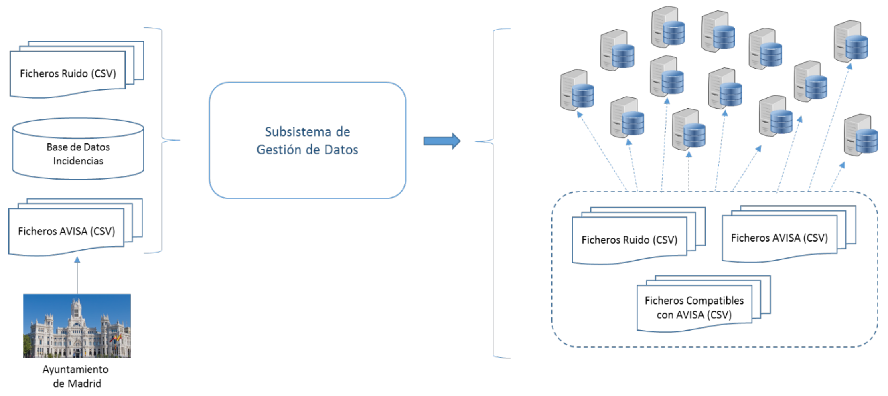
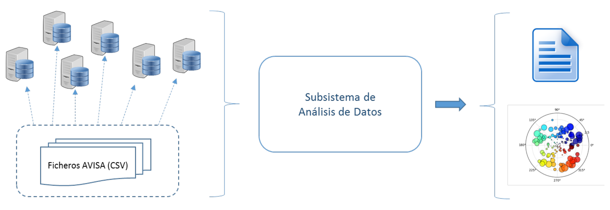

3 CONVIVE: Big Data para la ciudad inteligente

3.1 Introducción
Los datos abiertos (open data) es una iniciativa que muchas administraciones públicas están adoptando con el objetivo de mejorar la transparencia en lo que respecta a sus funciones de cara a la ciudadanía.
El ayuntamiento de Madrid es uno de los ayuntamientos que ha empezado a ofrecer datos en abierto, y en su portal de datos abiertos puede accederse a multitud de bases de datos con información de todo tipo, desde los alojamientos en la ciudad hasta las mediciones de contaminación de las estaciones de registro de contaminantes.
La puesta a disposición de la ciudadanía de toda esta información, no solo mejora la transparencia sobre la gestión municipal, sino que permite a ciudadanos o a empresas particulares poder analizar estos datos para mejorar sus decisiones.
3.2 Objetivos
El objetivo principal del proyecto CONVIVE es mejorar el conocimiento del estado real de la ciudad a través de la medición de datos de su entorno y de la información aportada por los ciudadanos. Para ello se desplegará toda la infraestructura necesaria para adquirir esa información y tratarla adecuadamente.
Un objetivo específico del proyecto es que el tratamiento de datos debe realizarse con tecnologías relacionadas con el Big Data. Así nos aseguraremos de que el sistema pueda integrar fuentes de información variadas incluso después de que el sistema haya sido creado.
3.3 Descripción técnica
El sistema a implementar consiste en una plataforma de análisis de varias fuentes de información existentes en el Ayuntamiento de Madrid. Para ello debe solucionar tres aspectos fundamentales:
- La recogida de información de la ciudad. Este sistema incluye datos de dispositivos, de ciudadanos y de entidades.
- La gestión de los datos recogidos. Debe ser lo suficientemente genérica para gestionar posibles incertidumbres en los datos propias de una ciudad: información incompleta, nuevas fuentes de información, nuevos campos en la misma información, etc.
- El análisis de los datos almacenados. Los análisis pueden basarse en la combinación de varios conjuntos de datos integrados en el sistema. Es necesario tener en cuenta que estos datos pueden estar en ubicaciones diferentes y pueden tener un tamaño que no permita su adecuado procesamiento en una sola máquina.
En una ciudad el número de fuentes de información no está fijado ya que en cualquier momento pueden aparecer nuevas fuentes de información a medida que se implanten tecnologías nuevas o formas distintas de participar por parte de los ciudadanos. En el proyecto CONVIVE se definen algunas fuentes de información que deben ser tratadas y se emplean tecnologías que faciliten la integración de nuevas fuentes de información en el futuro. Las fuentes de información que debe gestionar CONVIVE son:
- Avisos de incidencias en la vía pública por parte de los ciudadanos. El sistema integrará estos avisos tanto de forma interactiva (para gestionar la incidencia) como de forma procesada (registros de avisos durante un periodo de tiempo).
- Los avisos interactivos se almacenarán en un sistema que permita la actualización del estado de los mismos.
- Los avisos procesados suelen corresponder a avisos interactivos que han sido transformados a un formato que facilita su procesamiento estadístico. De esta forma se podrá relacionar estos avisos con otras fuentes estadísticas disponibles en la ciudad.
- Información acústica de la ciudad. El sistema integrará los datos del nivel de ruido existente en distintas partes de la ciudad. Para ello obtendrá la información de ruido en determinadas zonas y los registrará para su posterior análisis.
Para llevar a cabo el proyecto CONVIVE se divide su desarrollo en tres subsistemas distintos que coinciden con los tres aspectos a solucionar previamente comentados.
3.3.1 Subsistema de adquisición de datos
En este subsistema de deben solucionar aspectos relacionados con la recogida de la información. Para ello debe desplegar una red de sensores acústicos en la ciudad (encargados del proceso de recogida de información de ruido) y habilitar un sistema de comunicación para los ciudadanos (con el fin de generar avisos de incidencias en la vía pública).
En el proyecto CONVIVE tendremos dos tipos de información al finalizar el trabajo en este subsistema:
- Una base de datos con información sobre las incidencias reportadas por los ciudadanos. En esta base de datos se almacenan las incidencias activas y cuyo estado se puede actualizar. Como criterio de diseño se almacenarán en una base de datos (no en un fichero) ya que tiene ciertas ventajas para su gestión.
- Información relacionada con los niveles de ruido. Se recogerá información de los sensores desplegados en la ciudad y se almacenarán en ficheros con formato CSV.

3.3.2 Subsistema de gestión de datos
En este subsistema de deben solucionar aspectos relacionados con el almacenamiento y sincronización de la información a través de distintas máquinas.
Dado que no se implementará realmente el subsistema de adquisición de datos (aunque sí se llevará a cabo un diseño detallado), se obtendrán datos del sistema AVISA que contiene las incidencias reportadas por los ciudadanos, y del nivel de ruidos del Ayuntamiento de Madrid.
Una vez que se disponga de todos los datos como ficheros en formato CSV (los datos de AVISA y los de ruido) utilizaremos un sistema que permita distribuirlos a través de varias máquinas y sincronizarlos para facilitar su acceso.

3.3.3 Subsistema de análisis de datos
En este subsistema se obtiene información útil a partir de todos los datos disponibles. En un sistema real se cruzarían los datos del sistema AVISA, con los de niveles de ruido y con varios datos más para obtener información sintetizada y en muchos casos inferir relaciones entre distintos hechos que estén ocurriendo. En el caso del proyecto CONVIVE, por motivos de claridad a la hora de aprender conceptos, se utilizará únicamente un fichero con los datos del sistema AVISA en formato CSV. Se descartarán tanto los datos de ruido como cualquier otro tipo de fuente de datos que puede obtenerse del Ayuntamiento de Madrid.
En el proyecto CONVIVE se realizarán dos acciones con los datos:
Se analizarán los datos existentes del sistema AVISA para obtener información sintetizada de los incidentes reportados. Para ello debe tenerse en cuenta que el fichero con los datos puede estar repartido entre varias máquinas y que se debe utilizar un modelo de programación que facilite el acceso a todos esos datos sin cargar la máquina en la que se ejecute.
Se visualizarán los datos del sistema AVISA para que sean más fácilmente entendibles por los destinatarios finales. Las decisiones finales sobre las acciones a tomar las llevarán a cabo por personas con distintas capacidades de abstracción y síntesis. Para facilitar esas decisiones se mostrarán los datos mediante modelos visuales que permitan una mejor comprensión de éstos.

3.4 Tareas
- Obtener los ficheros de datos del sistema AVISA del Ayuntamiento de Madrid.
- Obtener los ficheros de ruido del Ayuntamiento de Madrid.
- Crear el procedimiento de transformación de entradas de la base de datos en ficheros en formato compatible con los del sistema AVISA.
- Incluir todos los ficheros, los del sistema AVISA, los generados a partir de la base de datos y los de ruido, en un sistema de ficheros distribuido.
- Preprocesar el conjunto de datos para prepararlo para el análisis estadístico.
- Realizar un análisis estadístico de las principales variables incluidas en el conjunto de datos.
- Crear gráficos de visualización de los datos correspondientes a las principales variables del conjunto de datos.
3.5 Datos
Se obtendrán ficheros con información del portal de datos abiertos del Ayuntamiento de Madrid. Este portal tiene un catálogo de datos disponibles bajo los principios de la iniciativa Datos Abiertos (Open Data), que impulsa la publicación abierta, regular, reutilizable y autorizada de los datos de carácter público. En concreto se utilizarán los conjuntos de datos siguientes:
- Datos del Sistema AVISA. Tiene información de avisos de ciudadanos sobre incidencias en la vía pública. Es un fichero en formato CSV.
- Información de la contaminación acústica. Es otro fichero en formato CSV.